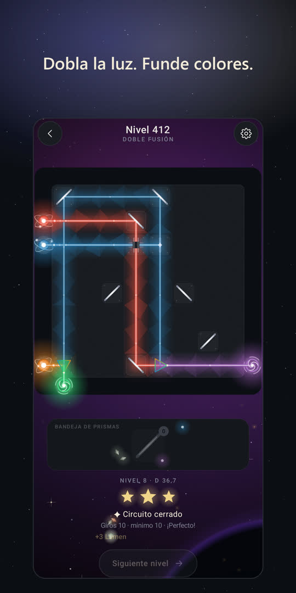
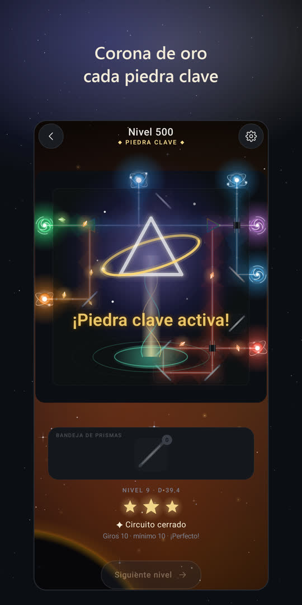
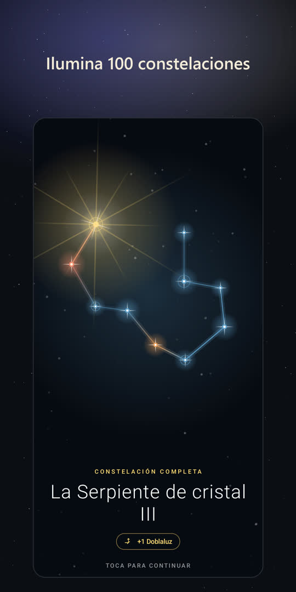

TESSERA
Tessera es un puzle tranquilo de luz y espejos para Android. Gira espejos, divide haces y funde colores hasta que todos los receptores brillen, y mira cómo cada tablero resuelto se convierte en un vitral. Sin reloj, sin vidas, nada que comprar.
Próximamente en Google Play · Español, English, Türkçe, Deutsch, Français



- Los espejos desvían el haz, los divisores lo parten, los combinadores funden colores (ámbar y cobalto dan esmeralda), los puentes dejan que los haces se crucen
- Cada nivel está verificado por máquina: tiene solución y una única solución más corta; iguálala para tres estrellas
- Un Atlas celeste de constelaciones, cada una un fondo animado para tu pantalla de inicio
- Se juega entre las estrellas: la luz va de los púlsares a galaxias que giran, y cada nivel es un nuevo sector del espacio
- Cada sonido se sintetiza en vivo en una escala pentatónica; se juega con un solo pulgar
- Sin banners: de vez en cuando un anuncio breve entre pantallas, y vídeos que puedes elegir ver para una pista o un potenciador gratis
- Logros opcionales de Google Play Games; los acertijos también se juegan sin conexión
Preguntas
¿Qué tipo de juego es Tessera?
Un puzle de lógica sobre la luz: giras espejos y colocas prismas para que cada haz llegue al receptor de su color. Es tranquilo (sin reloj ni vidas), pero es un puzle de verdad: las últimas etapas piden largas cadenas de reflejos, haces divididos y fusiones de color.
¿Es gratis? ¿Tiene anuncios?
Es gratis y no tiene compras dentro de la aplicación. No hay banners; de vez en cuando puede aparecer un anuncio breve a pantalla completa entre pantallas (nunca en mitad de un acertijo, como mucho uno cada dos minutos), y puedes elegir ver vídeos cortos para una pista extra o un potenciador gratis.
¿Cuántos niveles hay?
1.000, en diez etapas, desde un solo espejo hasta matrices ópticas de colores fundidos. Cada décimo nivel es una Piedra clave con marco dorado, la más difícil de su capítulo.
¿Se puede jugar sin conexión?
Sí, los acertijos se juegan sin conexión a internet. Los anuncios y los logros de Play Games necesitan conexión.
¿En qué dispositivos funciona?
Android 8.0 o posterior, en móviles, tabletas y plegables (en pantallas grandes también gira en horizontal).